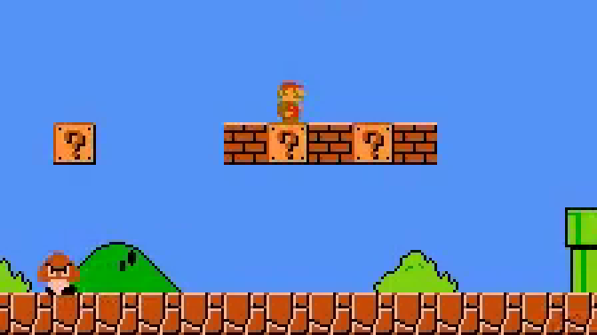
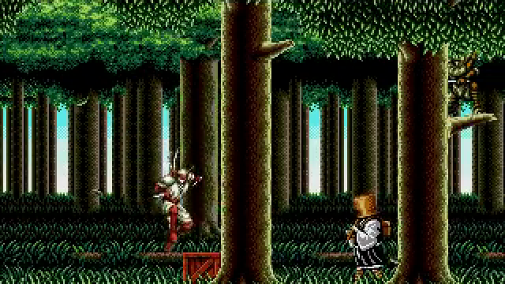
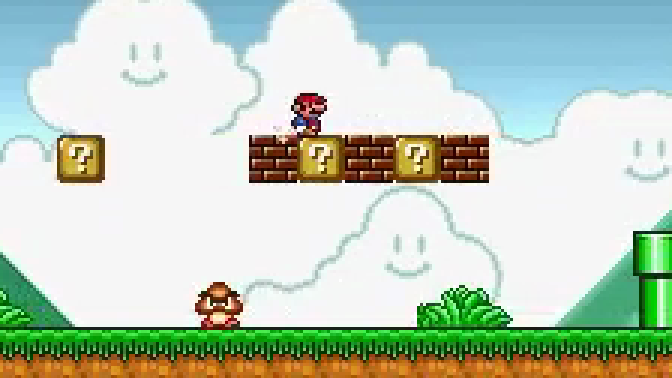

Model training games
We release gameplay data and the corresponding fMRI responses for all recorded levels of three games. Super Mario Bros. and Super Mario Bros. 3 provide related environments with differences in visual appearance, level design and game mechanics. Shinobi III differs more substantially in its visual content, actions, event structure and behavioral demands.
-

Super Mario Bros.
-

Super Mario Bros. 3
-

Shinobi III: Return of the Ninja Master
In-distribution test game

Super Mario All-Stars
For ID testing, we use the visually enhanced remake of Super Mario Bros. from Super Mario All-Stars, a collection of four Mario remakes. This remake preserves the original levels and basic actions. We release gameplay data for all 22 recorded levels, comprising approximately 30 hours across subjects, and keep the corresponding fMRI responses hidden.
OOD games
Hidden games
The Generalization Phase tests out-of-distribution (OOD) generalization to games that are kept hidden until then. We provide approximately two hours of gameplay data per subject, with the same gameplay data modalities, and keep the corresponding fMRI responses hidden. Performance on these games determines the final ranking.
Subjects
Subject coverage differs across games. Five subjects played the three Mario games and four played Shinobi III. Subject sub-04 played only Shinobi III. Data from this subject are provided for training only.
| SMB | SMB3 | Shinobi | All-Stars | Role | |
|---|---|---|---|---|---|
| sub-01 | played | played | played | played | Tested |
| sub-02 | played | played | played | played | Tested |
| sub-03 | played | played | not played | played | Tested |
| sub-04 | not played | not played | played | not played | Training only |
| sub-05 | played | played | not played | played | Tested |
| sub-06 | played | played | played | played | Tested |
Dataset coverage figureLevels, attempts, subject coverage and controller use. The image shows earlier data totals. ShowHide


Open full size ↗Open full size ↗